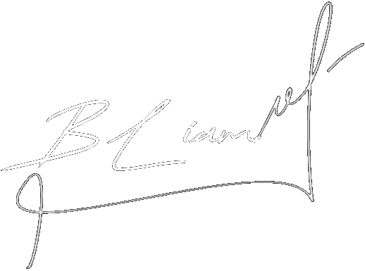

Cresci nas vielas estreitas e sombrias do nosso bairro social, onde a pobreza e a luta diária faziam parte da vida. O meu nome é Liam e sou o filho mais novo da família Blackrose. Desde cedo, vi o meu pai trabalhar arduamente para nos sustentar, enquanto a minha mãe, mantinha a casa e cuidava de mim e da minha irmã. Sempre tive talento para o futebol, e todos no bairro diziam que eu podia ir longe. Sonhava em ser jogador profissional e via isso como uma saída para a nossa realidade difícil. Mas a vida, às vezes, tem outros planos. A morte repentina do nosso pai mudou tudo. Ele foi assassinado em um assalto, deixando um vazio enorme e uma responsabilidade esmagadora sobre os nossos ombros. Sem a presença dele, a nossa família começou a desmoronar, e eu sentia-me perdido, sem saber como preencher aquele vazio. Com o tempo, comecei a afastar-me do futebol e a envolver-me com as gangues do bairro. O dinheiro fácil e a sensação de pertencimento puxaram-me para um caminho sombrio. Sentia uma raiva intensa pela injustiça que tirou a vida do meu pai, e esse ódio levou-me ainda mais fundo no mundo do crime. Quando a nossa mãe foi acusada injustamente e presa, isso quebrou de vez qualquer esperança que eu tinha de uma vida diferente. Ver a minha mãe ser levada, sabendo que ela era inocente, encheu-me de um desespero que só conseguia abafar com violência. Os anos passaram e afundei-me cada vez mais neste mundo. As ruas tornaram-se a minha casa, e a criminalidade, o meu modo de vida. Afastava-me cada vez mais da minha família, da minha irmã, e do sonho que um dia tive. Os meus dias eram cheios de perigo e incerteza, mas havia um certo conforto na familiaridade do que estava a acontecer. A nossa mãe ainda está presa, a pagar por um crime que não cometeu. A injustiça da sua situação só alimenta a minha raiva e a minha determinação em continuar no caminho que escolhi. Não vejo uma saída fácil desta vida, e a esperança de um futuro diferente parece cada vez mais distante. Hoje, continuo nas ruas, imerso na vida do crime que escolhi. A minha vida tomou um rumo do qual não sei se posso escapar. Apesar disso, uma parte de mim ainda espera, em silêncio, por uma oportunidade de redenção. Mas, até lá, sigo o meu caminho, vivendo um dia de cada vez, nas sombras do bairro onde cresci.
